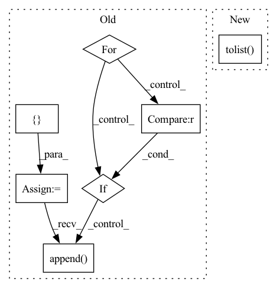

Pattern ID :5671

Before Change
// 用训练好的模型进行decode预测
out = greedy_decode(model, src, src_mask, max_len=MAX_LENGTH, start_symbol=data.cn_word_dict["BOS"])
// 初始化一个用于存放模型翻译结果句子单词的列表
translation = []
// 遍历翻译输出字符的下标（注意：开始符"BOS"的索引0不遍历）
for j in range(1, out.size(1)):
// 获取当前下标的输出字符
sym = data.cn_index_dict[out[0, j].item()]
// 如果输出字符不为"EOS"终止符，则添加到当前句子的翻译结果列表
if sym != "EOS":
translation.append(sym)
// 否则终止遍历
else:
break
After Change
// 设置attention mask
src_mask = (src != 0).unsqueeze(-2)
// 用训练好的模型进行decode预测
decode_result = greedy_decode(model, src, src_mask,
max_len=config.max_len).squeeze().tolist()
// 模型翻译结果解码
translation = sp_chn.decode_ids(decode_result)
trg.append(cn_sent[i])
In pattern: SUPERPATTERN
Frequency: 3
Non-data size: 7
Instances
Fragment ID: 19898219
Project Name: hemingkx/chinesenmt
Commit Name: 9adf53cb6d9b875c9d173643a8d266d49d6f90eb
Time: 2020-12-15
Author: hemingkx@gmail.com
File Name: train.py
M Class Name: AnonimousClass
N Class Name: AnonimousClass
M Method Name: evaluate(2)
N Method Name: evaluate(2)
M Parent Class:
N Parent Class:
M File Name: train.py
N File Name: train.py
M Start Line: 53
M End Line: 84
N Start Line: 67
N End Line: 95
'>
Before Change
preds = torch.sigmoid(preds)
temp1 = []
temp2 = []
for i, truth in enumerate(truths):
if truth[-1] == 1:
temp1.append(preds[i].tolist())
// print(preds[i])
else:
temp2.append(preds[i].tolist())
// print(preds[i])
// print(temp2)
print(np.mean(temp1,0))
print(np.mean(temp2,0))
After Change
preds = torch.sigmoid(preds)
aucs = roc_auc_score(truths, preds, labels=list(range(num_emo)), average=None).tolist()
aucs.append(np.average(aucs))
// temp1 = []
// temp2 = []
'>
Fragment ID: 19898218
Project Name: wenliangdai/modality-transferable-mer
Commit Name: 0ad817854a7597bf81a100879fdb73343ad33857
Time: 2020-06-27
Author: wenliang.dai.1995@gmail.com
File Name: src/evaluate.py
M Class Name: AnonimousClass
N Class Name: AnonimousClass
M Method Name: eval_iemocap(2)
N Method Name: eval_iemocap(2)
M Parent Class:
N Parent Class:
M File Name: src/evaluate.py
N File Name: src/evaluate.py
M Start Line: 159
M End Line: 224
N Start Line: 138
N End Line: 182
'>
Before Change
edges = list(self.G.edges)
else:
edges_set = set()
edges = []
for i in range(len(self.edge_index[0])):
edge = (self.edge_index[0][i].item(), self.edge_index[1][i].item())
if edge in edges_set or (edge[1], edge[0]) in edges_set:
continue
edges_set.add(edge)
edges.append(edge)
random.shuffle(edges)
split_offset = 0
After Change
if self.G is not None:
edges = list(self.G.edges)
else:
edges = self.edge_index[:, 0:self.num_edges].t().tolist()
random.shuffle(edges)
split_offset = 0
'>
Fragment ID: 19898217
Project Name: snap-stanford/deepsnap
Commit Name: 9653b69ff417586e7fed319773de5fa53fac945e
Time: 2020-11-10
Author: zzhan147@illinois.edu
File Name: deepsnap/graph.py
M Class Name: Graph
N Class Name: Graph
M Method Name: _split_edge(2)
N Method Name: _split_edge(2)
M Parent Class: object
N Parent Class: object
M File Name: deepsnap/graph.py
N File Name: deepsnap/graph.py
M Start Line: 964
M End Line: 973
N Start Line: 964
N End Line: 964